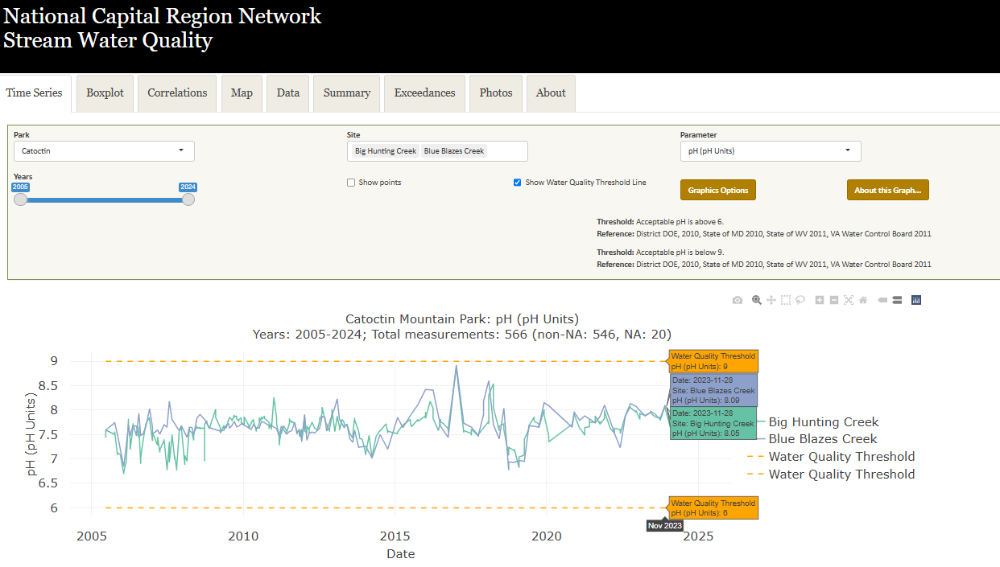
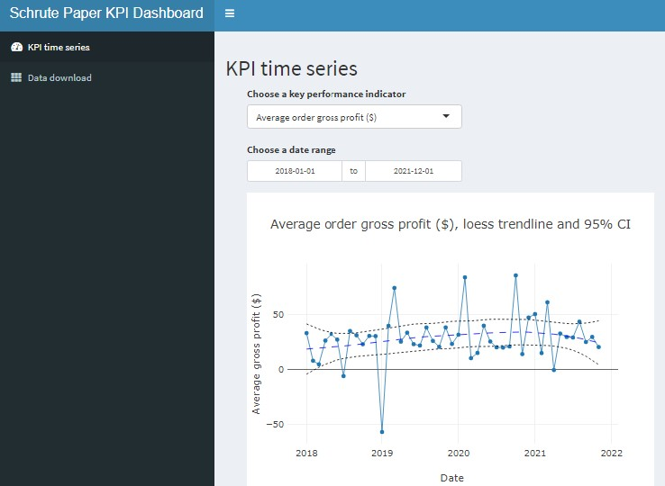

I'm a programmer who loves to build, maintain, and deploy data infrastructure.
I have modernized data systems by building and migrating databases.
I have built and deployed custom webapps, reports, and dashboards to drive results.
This portfolio features some of my projects, along with a link to the final product and/or the project's source code.
I led an end-to-end data science project that resulted in a peer-reviewed publication.
I defined study objectives, made and tested hypotheses, gathered, prepared, summarized, and visualized data, applied statistical methods like A-B testing, time-series, and Bayesian inference, and published a peer-reviewed article that documents the process and results.
I wrote an extract-tranform-load program and delivered it as an R package. The program ingests an excel spreadsheet of user-provided data and serializes the data to be loaded into and EndNote library.
I wrote an extract-tranform-load program for automated backups and data processing. This python program extracts relational data from an API generates two flattened datasets, validates the datasets against business logic, and uploads data to an API.
I built a python program that uses machine learning to extract text from images to help me learn Mandarin Chinese. The program automates user-interactions to capture images, then iterates through a folder of images, extracts the text from each image, and concatenates that text. Finally, the program corrects known transcription errors in the text and writes the text to a file.
I migrated twenty years of data from legacy databases into one modern SQL Server database. This python program extracts database schema details from source code to build a local relational database, extracts data from sources, enforces business logic to quality-control records, generates and validates primary-key-foreign-key relationships, generates SQL for INSERTs, and loads relational data to the specified endpoint.
I wrote an R script that produces parameterized sales data summaries for each of Schrute Paper's regional managers. Each report summarizes one region's sales data into figures, tables, and dynamic summary paragraphs.

I am lead developer supervising a team of three responsible for refactoring, updating, and launching a public-facing data exploration and visualization webapp. The webapp is a primary data-deliverable for long-term monitoring of KPIs. The webapp will let users group and summarize data, generate dynamic visualizations and text-summaries, and download the dataset.
I used machine learning to analyze natural language text and predict whether a movie review was positive or negative. I programmed the machine learning models in Python, summarized model outputs in R, and wrote an html RMarkdown to document my process.

I wrote a Shiny R webapp dashboard to summarize the financial performance of Schrute Paper. The webapp lets users interact with a time-series of key performance indicators, and view, search, and download the data.